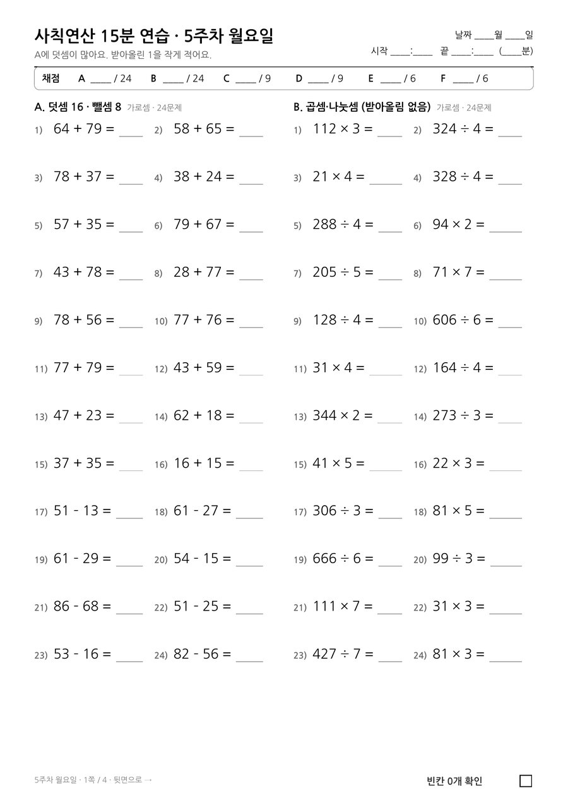
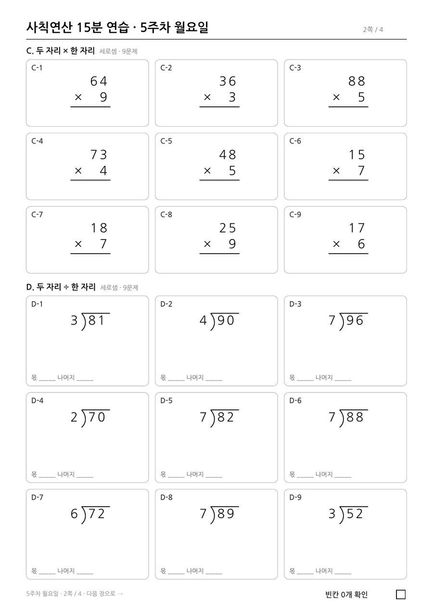
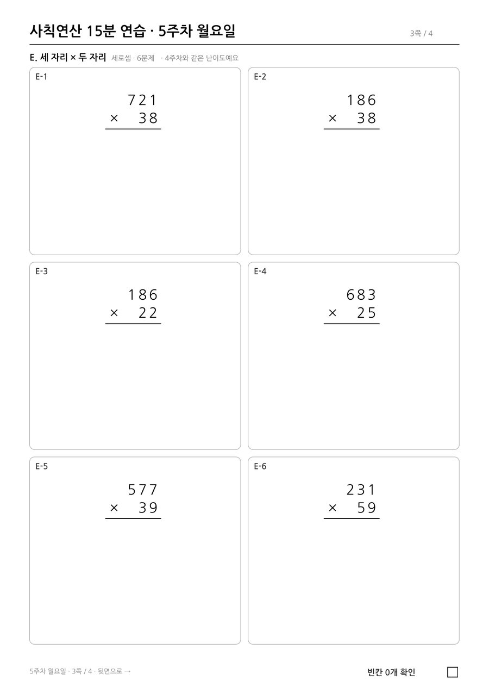
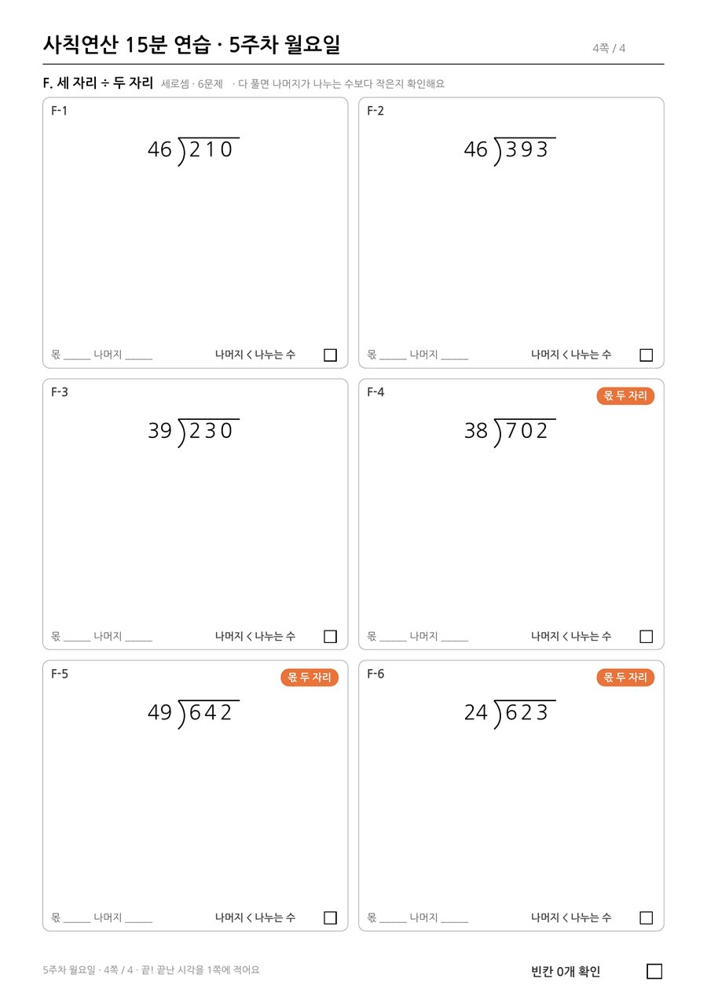

초등 4학년 · 사칙연산 · 5주차
5주차: 덧셈 실수
잡기 주간
3주차를 풀어 보니 틀린 문제는 대부분 '몰라서'가 아니라 '실수'였어요. 가장 쉬운 두 자리 덧셈을 3주째 주에 4~6개씩 틀렸고, 나눗셈에서 틀린 4개 중 2개는 안 풀고 넘어간 문제였어요. 그래서 5주차는 난이도를 올리지 않고 실수를 잡는 데 집중해요.
이번 주에 바뀐 점
- A를 덧셈 16 + 뺄셈 8로. 1~16번이 덧셈이고, 그중 10문제는 받아올림이 두 번 있어 답이 세 자리예요(예: 84 + 59 = 143). 17~24번은 받아내림이 있는 뺄셈이에요. 난이도를 바꾼 건 이것 하나예요.
- 쪽마다 '빈칸 0개 확인' 칸. 한 쪽을 다 풀면 빈칸이 없는지 보고 체크해요.
- 나눗셈(F)마다 '나머지 < 나누는 수' 확인 칸. 몫을 어림한 뒤 나머지가 나누는 수보다 크거나 같으면 몫을 고쳐야 해요.
- B·C·D·E·F는 4주차와 같은 난이도예요. F-1~3은 몫 한 자리, F-4~6은 몫 두 자리예요.
- 기록표가 자세해졌어요. A 덧셈과 뺄셈, 안 풀고 넘어간 문제(빈칸)를 따로 적으면 실수인지 몰라서인지 구분돼요.
받아올림 두 번, 실수 없이
- 일의 자리부터 더해요. 4 + 9 = 13 → 3을 쓰고 1을 작게 올려 적어요.
- 십의 자리에 올려 적은 1까지 더해요. 8 + 5 + 1 = 14
- 답은 세 자리 143. 가로셈도 머릿속으로만 하지 말고 1을 적어요. 검산: 143 – 59 = 84
하루 구성 (78문제)
B와 D는 만들 수 있는 문제 수가 적어서 이전 주차와 일부 겹칠 수 있어요. 한 주 안에서는 겹치지 않아요.
미리보기

1쪽 · 가로셈 A(덧셈 16·뺄셈 8)·B

2쪽 · 세로셈 C·D

3쪽 · 세 자리 × 두 자리

4쪽 · 세 자리 ÷ 두 자리 (확인 칸)
앞 주차가 없다면 1·2주차, 3주차, 4주차부터 시작해 보세요.